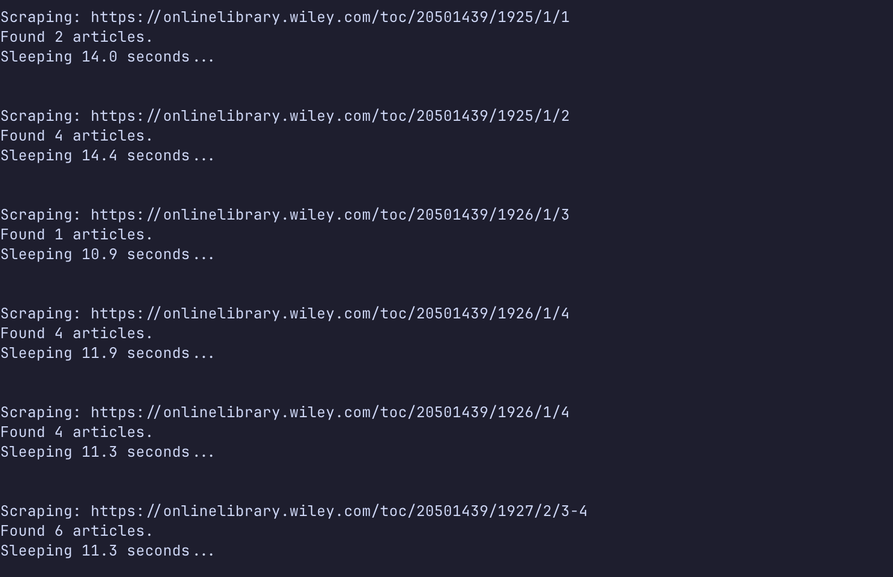
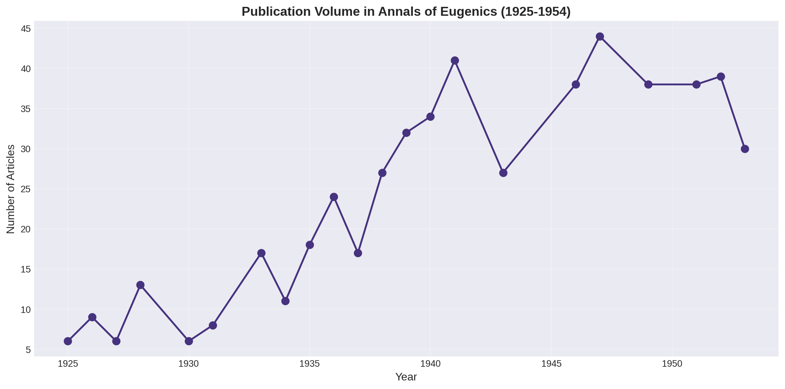
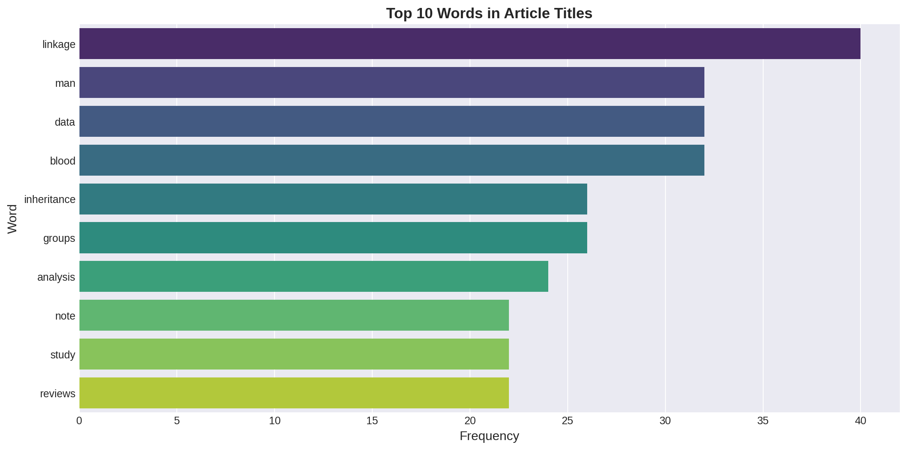
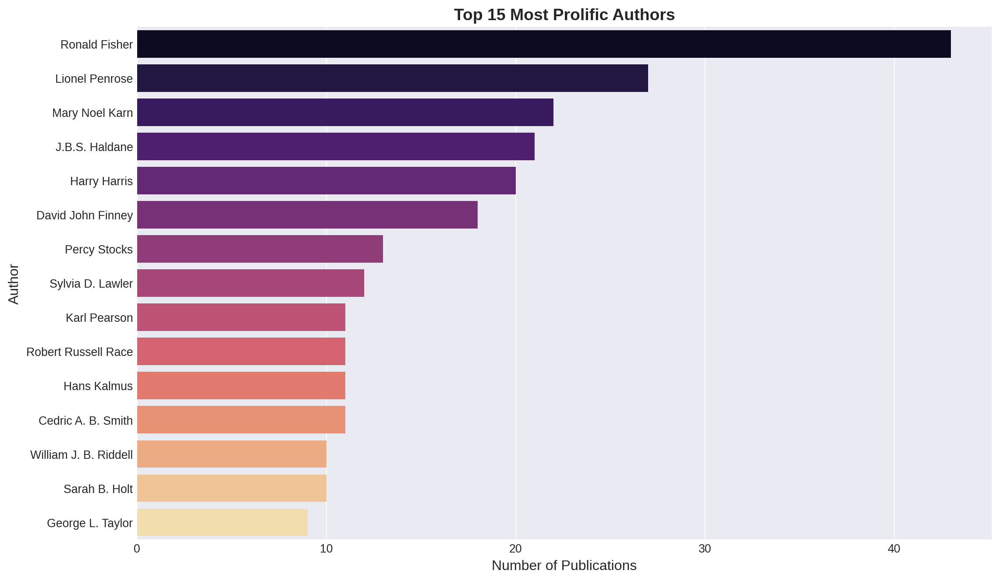

Historical Analysis of the Annals of Eugenics (1925-1954)
Python
Web Scraping
Data Cleaning
Historical Analysis
Data Visualization
A data-driven exploration of publication trends, authorship patterns, and research topics in a controversial scientific journal.
Author
Ashley Russell
Published
November 3, 2024
Modified
January 27, 2026
1 Introduction
This project examines the Annals of Eugenics, a scientific journal published from 1925 to 1954 before being renamed the Annals of Human Genetics. Through quantitative analysis of publication metadata, this study explores patterns in authorship, research topics, and publication trends during a controversial period in the history of genetics and statistics.
1.1 Context and Motivation
This analysis is part of a larger investigation into the history of eugenics in academia, particularly at The College of Idaho and within the state of Idaho. Understanding what was published in the Annals of Eugenics provides insight into the type of research that was considered legitimate science during this era and how the field evolved over time.
1.2 Research Questions
How did publication volume change over the journal’s 29-year run?
Which researchers were the most prolific contributors to the journal?
What topics dominated the research published in the Annals of Eugenics?
1.3 About the Dataset
Data Source: The Annals of Eugenics online archive Collection Method: Web scraping using Python (BeautifulSoup, requests) Time Period: 1925-1954 (Volumes 1-18) Data Points: Article titles, authors, publication dates, volume/issue numbers
The dataset was constructed by scraping article metadata directly from the journal’s online archive, then cleaned and normalized for analysis.
2 Data Collection
2.1 Web Scraping Implementation
I developed a Python script to systematically extract article metadata from the journal archive. The scraper navigates through each volume and issue, collecting titles, authors, and publication dates.
Key challenges included: - Handling inconsistent formatting across different volumes - Extracting author names with various academic titles and credentials - Parsing dates from different formats

Screenshot of raw scraped data showing article metadata structure
3 Data Processing
Import Python libraries
import pandas as pdimport matplotlib.pyplot as pltfrom wordcloud import WordCloudimport refrom sklearn.feature_extraction.text import ENGLISH_STOP_WORDSfrom collections import Counterimport seaborn as snsfrom tabulate import tabulate# Set visualization stylesns.set_palette("viridis")plt.style.use('seaborn-v0_8-darkgrid')
| title | authors | pages | date | article_url | issue_url |
|--------------------------------------------------------------------------------------------------------------------------|-----------------------------------------------------------------------------------------------------------------------------------------------|------------|--------------|------------------------------------------------------------------------|-------------------------------------------------------|
| FOREWORD | nan | p. 1-4 | October 1925 | https://onlinelibrary.wiley.com/doi/10.1111/j.1469-1809.1925.tb02036.x | https://onlinelibrary.wiley.com/toc/20501439/1925/1/1 |
| THE PROBLEM OF ALIEN IMMIGRATION INTO GREAT BRITAIN, ILLUSTRATED BY AN EXAMINATION OF RUSSIAN AND POLISH JEWISH CHILDREN | KARL PEARSON,, MARGARET MOUL, | p. 5-54 | October 1925 | https://onlinelibrary.wiley.com/doi/10.1111/j.1469-1809.1925.tb02037.x | https://onlinelibrary.wiley.com/toc/20501439/1925/1/1 |
| PROBLEM OF ALIEN IMMIGRATION | nan | p. 56-127 | October 1925 | https://onlinelibrary.wiley.com/doi/10.1111/j.1469-1809.1925.tb02038.x | https://onlinelibrary.wiley.com/toc/20501439/1925/1/2 |
| A PEDIGREE OF EPICANTHUS AND PTOSIS | C. H. USHER M.B., | p. 128-138 | October 1925 | https://onlinelibrary.wiley.com/doi/10.1111/j.1469-1809.1925.tb02039.x | https://onlinelibrary.wiley.com/toc/20501439/1925/1/2 |
| ON THE RELATIVE VALUE OF THE FACTORS WHICH INFLUENCE INFANT WELFARE. AN INQUIRY by ETHEL M. ELDERTON | Dr A. G. Anderson M.O.H.,, Dr Wm. Arnold Evans M.O.H.,, Dr Alfred Greenwood M.O.H.,, Dr H. O. Pilkington M.O.H.,, Dr C. H. Tattersall M.O.H., | p. 139-243 | October 1925 | https://onlinelibrary.wiley.com/doi/10.1111/j.1469-1809.1925.tb02040.x | https://onlinelibrary.wiley.com/toc/20501439/1925/1/2 |
3.2 Data Cleaning
3.2.1 Temporal Data
Converting publication dates to a standardized format for time-series analysis:
Parse dates and extract year/month
df["parsed_date"] = pd.to_datetime(df["date"], format="%B %Y", errors="coerce")df["year"] = df["parsed_date"].dt.yeardf["month"] = df["parsed_date"].dt.month# Verify date parsing workedprint(f"Date range: {df['year'].min():.0f} to {df['year'].max():.0f}")print(f"Total articles: {len(df)}")
Date range: 1925 to 1953
Total articles: 523
3.2.2 Author Name Normalization
Author names required extensive cleaning due to: - Academic titles (Dr., Professor, Sir) - Degrees and credentials (M.D., Ph.D., F.R.S., etc.) - Institutional affiliations in parentheses - Inconsistent formatting (e.g., “M. N. Karn” vs “Mary N. Karn”)
Strategy: Normalize all authors to FirstInitial_LASTNAME format to handle variations while preserving identity.
Split author strings into lists
def clean_authors(x):"""Split comma-separated author strings into lists."""if pd.isna(x):return [] parts = [p.strip() for p in x.split(",") if p.strip()]return partsdf["author_list"] = df["authors"].apply(clean_authors)
def clean_author(name):""" Normalize author names to FirstInitial_LASTNAME format. Example: "Dr. Mary N. Karn, M.D." → "M_KARN" """ifnotisinstance(name, str) ornot name.strip():returnNone# Remove titles (Dr., Professor, Sir) name = titles.sub("", name)# Remove parenthetical suffixes (institutional affiliations) name = re.sub(r"\([^)]*\)", "", name)# Remove degrees and credentials name = degree_regex.sub("", name)# Remove periods and normalize whitespace name = name.replace(".", " ") name = re.sub(r"\s+", " ", name).strip()ifnot name:returnNone parts = [p for p in name.split() if p]iflen(parts) ==0:returnNone# Extract surname (last token) and first initial last = parts[-1].upper() first_initial = parts[0][0].upper()returnf"{first_initial}_{last}"# Apply cleaning function to all authorsdf["clean_authors"] = df["author_list"].apply(lambda lst: [clean_author(a) for a in lst if clean_author(a) isnotNone])
plt.figure(figsize=(12, 6))plt.plot(year_counts.index, year_counts.values, marker="o", linewidth=2, markersize=8)plt.xlabel("Year", fontsize=12)plt.ylabel("Number of Articles", fontsize=12)plt.title("Publication Volume in Annals of Eugenics (1925-1954)", fontsize=14, fontweight='bold')plt.grid(True, alpha=0.3)plt.tight_layout()plt.show()

Figure 1: Number of articles published in the Annals of Eugenics by year (1925-1954)
Key Findings: - Publication volume shows clear trends over the journal’s lifespan - Notable peaks and valleys may correspond to historical events (WWII, post-war period) - The journal maintained consistent output across most years
4.2 Research Topics
What themes dominated the research published in this journal?
Extract and count frequent words in titles
# Combine all titles and remove stop wordsall_titles =' '.join(df['clean_title']).lower()all_titles = re.sub(r'[^\w\s]', '', all_titles)words = all_titles.split()filtered_words = [word for word in words if word notin ENGLISH_STOP_WORDS]word_counts = Counter(filtered_words)
Figure 2: Most frequent terms in article titles (sized by frequency)
Top 10 most frequent words
top_words = word_counts.most_common(10)df_top_words = pd.DataFrame(top_words, columns=['Word', 'Frequency'])print("\nTop 10 Most Frequent Words in Titles:")print(tabulate(df_top_words, headers='keys', tablefmt='github', showindex=False))
Top 10 Most Frequent Words in Titles:
| Word | Frequency |
|-------------|-------------|
| linkage | 40 |
| man | 32 |
| data | 32 |
| blood | 32 |
| inheritance | 26 |
| groups | 26 |
| analysis | 24 |
| note | 22 |
| study | 22 |
| reviews | 22 |
Code
plt.figure(figsize=(12, 6))sns.barplot(x='Frequency', y='Word', data=df_top_words, palette='viridis')plt.title('Top 10 Words in Article Titles', fontsize=14, fontweight='bold')plt.xlabel('Frequency', fontsize=12)plt.ylabel('Word', fontsize=12)plt.tight_layout()plt.show()
/tmp/ipykernel_7604/3988971941.py:2: FutureWarning:
Passing `palette` without assigning `hue` is deprecated and will be removed in v0.14.0. Assign the `y` variable to `hue` and set `legend=False` for the same effect.
sns.barplot(x='Frequency', y='Word', data=df_top_words, palette='viridis')

Figure 3: Ten most frequent words appearing in article titles
Key Findings: - Terms like “inheritance,” “genetics,” “correlation,” and “blood” dominate - Statistical and quantitative language is prominent (“frequency,” “data,” “analysis”) - Mix of biological/genetic terms and mathematical/statistical terminology reflects the journal’s interdisciplinary nature
4.3 Authorship Patterns
Who were the most prolific contributors to the journal?
Count publications per author
# Flatten author lists and count occurrencesall_authors = [author for sublist in df['clean_authors'] for author in sublist]author_counts = Counter(all_authors)print(f"Total unique authors: {len(author_counts)}")# Get top 15 authorstop_authors = author_counts.most_common(15)df_top_authors = pd.DataFrame(top_authors, columns=['author', 'count'])
Total unique authors: 273
Map normalized names to full names
# Map coded names back to full names for readabilityrename_map = {"R_FISHER": "Ronald Fisher","L_PENROSE": "Lionel Penrose","M_KARN": "Mary Noel Karn","J_HALDANE": "J.B.S. Haldane","H_HARRIS": "Harry Harris","D_FINNEY": "David John Finney","P_STOCKS": "Percy Stocks","S_LAWLER": "Sylvia D. Lawler","K_PEARSON": "Karl Pearson","R_RACE": "Robert Russell Race","H_KALMUS": "Hans Kalmus","C_SMITH": "Cedric A. B. Smith","W_RIDDELL": "William J. B. Riddell","S_HOLT": "Sarah B. Holt","G_TAYLOR": "George L. Taylor",}df_top_authors['Author Name'] = df_top_authors['author'].map(rename_map).fillna(df_top_authors['author'])
Code
plt.figure(figsize=(12, 7))sns.barplot( x='count', y='Author Name', data=df_top_authors, palette='magma')plt.title('Top 15 Most Prolific Authors', fontsize=14, fontweight='bold')plt.xlabel('Number of Publications', fontsize=12)plt.ylabel('Author', fontsize=12)plt.tight_layout()plt.show()
/tmp/ipykernel_7604/2290777036.py:2: FutureWarning:
Passing `palette` without assigning `hue` is deprecated and will be removed in v0.14.0. Assign the `y` variable to `hue` and set `legend=False` for the same effect.
sns.barplot(

Figure 4: Fifteen most prolific authors in the Annals of Eugenics
Key Findings: - Ronald Fisher was by far the most prolific contributor - Several other prominent statisticians and geneticists appear frequently (Haldane, Pearson, Penrose) - The top authors represent both British and international researchers - Notable presence of women researchers (Karn, Lawler, Holt) in an era when women faced significant barriers in science
5 Discussion
5.1 Historical Context
The Annals of Eugenics was founded in 1925 by Karl Pearson and continued until 1954, when it was renamed the Annals of Human Genetics. This period spans:
The height of the eugenics movement (1920s-1930s)
World War II and the Holocaust (1939-1945)
Post-war reckoning with eugenics (late 1940s-1950s)
The name change in 1954 reflects the field’s shift away from eugenics toward human genetics as a legitimate scientific discipline.
5.2 Research Implications
This analysis reveals that while the journal bore the name “Eugenics,” much of the published research focused on statistical genetics, inheritance patterns, and quantitative methods. The prominence of terms like “correlation,” “inheritance,” and “blood groups” suggests a focus on empirical research rather than purely ideological work.
However, it’s important to note that:
The journal’s institutional context was explicitly eugenic
Even “objective” statistical research was often framed within eugenic ideology
The research published here was sometimes used to support discriminatory policies
5.3 Limitations
Data Collection:
Web scraping may have missed some articles if they were formatted differently
The analysis only includes article metadata, not full text
Some author names may have been incorrectly normalized despite extensive cleaning
Analytical Scope:
This analysis focuses on publication patterns, not content or impact
Word frequency analysis of titles provides limited insight into actual research content
No assessment of citation patterns or influence
Historical Interpretation:
Quantitative analysis alone cannot capture the social and political context
The presence of certain authors or topics doesn’t indicate endorsement or criticism
6 Conclusion
This project demonstrates how data science methods can illuminate patterns in historical scientific publishing. By scraping, cleaning, and analyzing metadata from the Annals of Eugenics, we gain insight into:
Publication trends during a controversial period in scientific history
Key contributors to the journal and their relative prominence
Research focus areas as reflected in article titles
This analysis forms part of a larger investigation into the history of eugenics in academia and provides a foundation for deeper historical research into this complex period.
6.1 Future Directions
Full-text analysis of articles to better understand research content
Network analysis of co-authorship patterns
Comparison with other genetics/statistics journals of the same era
Integration with historical records from institutions that published in this journal